2026-10-30 · 保留旧坐标和裁决 · 不逐孔审批
已保存“W2-N：是 V1，接 W2”“W2-S：是 V1，接 W2”。先追加同帧来源连续的两条M1西向横条和上端下突台阶，再加入两组完整2×2 V1候选。两组数量为AI设计候选，物理孔数/尺寸未知。
当前37金属候选、22已审局部接口、133设计候选孔。旧20裁决、125孔边界与中心保持；仅原C-M1-SPINE追加3个来源局部块，旧骨架/宽度/源锚点/原块保持，视口与原点不变。22组候选包围/间距通过，不等于真实PDK DRC或原图精密包围。
W2中段细横线交叉未辨出另一组独立V1，邻近细竖M1也不桥接；这是限定原图范围内的AI检查，不是证明无孔或五层/全网穷尽。沿母线继续向西发现W3、W4两条长M2，集中检查其四端。
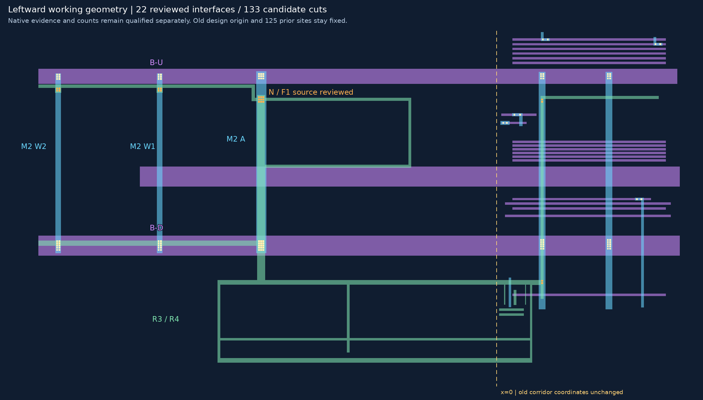
从右至左是已审W2、新W3、新W4。只判断孔层身份和承载，不要求孔数。每个详情都有M2与M3原生大邻域，未直接投影；M3上的孔不反充V2证据。
| 位置 | 候选关系 | 两层原图 |
|---|---|---|
| W3-U | 是否为V2，并接B-U / RT-M3-UP？ | W3-U两层放大图 |
| W3-D | 是否为V2，并接B-D / RT-M3-DOWN？ | W3-D两层放大图 |
| W4-U | 是否为V2，并接B-U / RT-M3-UP？ | W4-U两层放大图 |
| W4-D | 是否为V2，并接B-D / RT-M3-DOWN？ | W4-D两层放大图 |
可回复“W3-U、W3-D、W4-U、W4-D均正确”，或逐项修正。四处均是新接口，尚未加入工作层；W2/W1等旧裁决不重问。相似阵列不能替代新物理连接证据。
范围[220, 1730, 1400, 2950]，整数放大1倍。
无标记原图 · 标记大图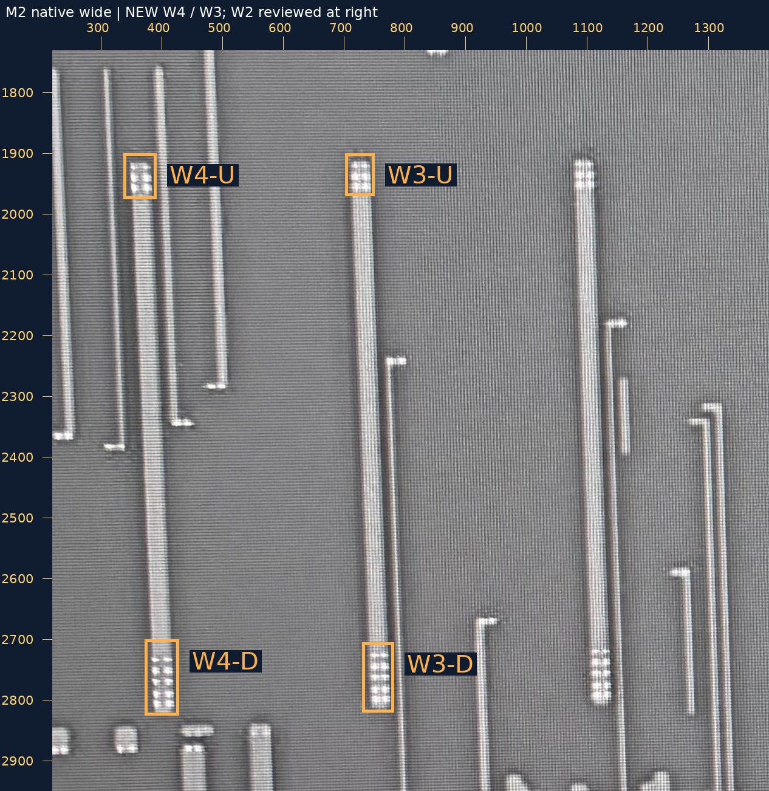
范围[220, 1750, 1400, 2970]，整数放大1倍。
无标记原图 · 标记大图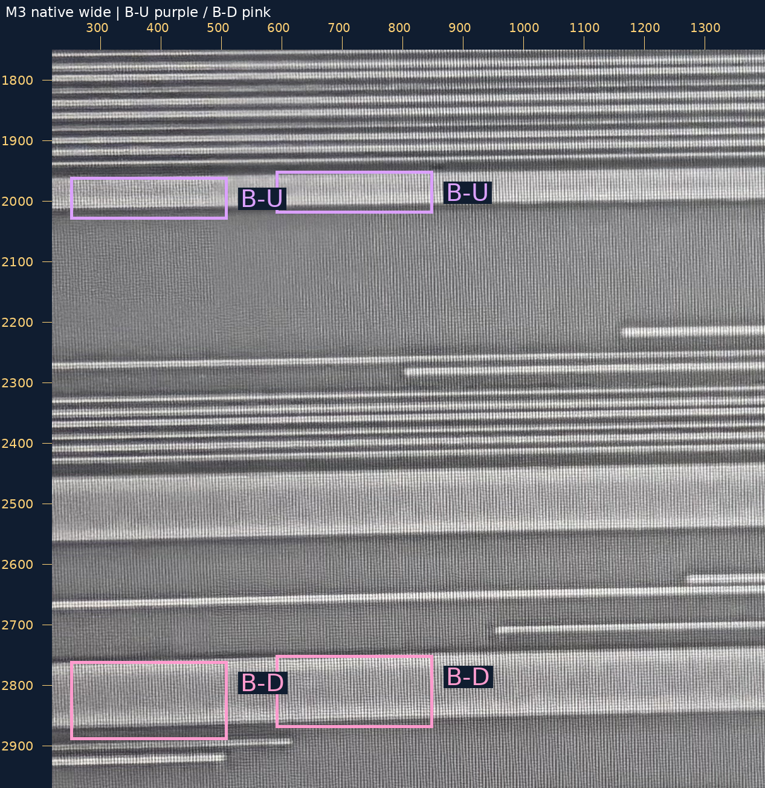
范围[510, 1730, 1060, 2180]，整数放大2倍。
无标记原图 · 标记大图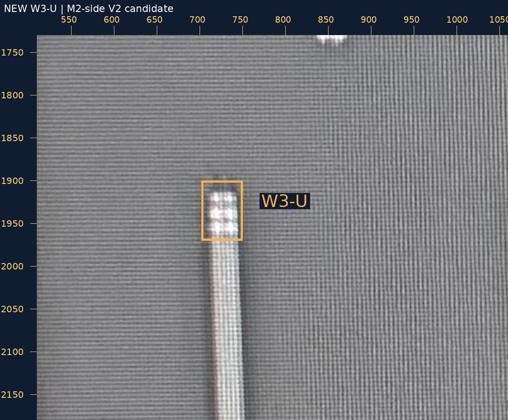
范围[510, 1780, 1060, 2230]，整数放大2倍。
无标记原图 · 标记大图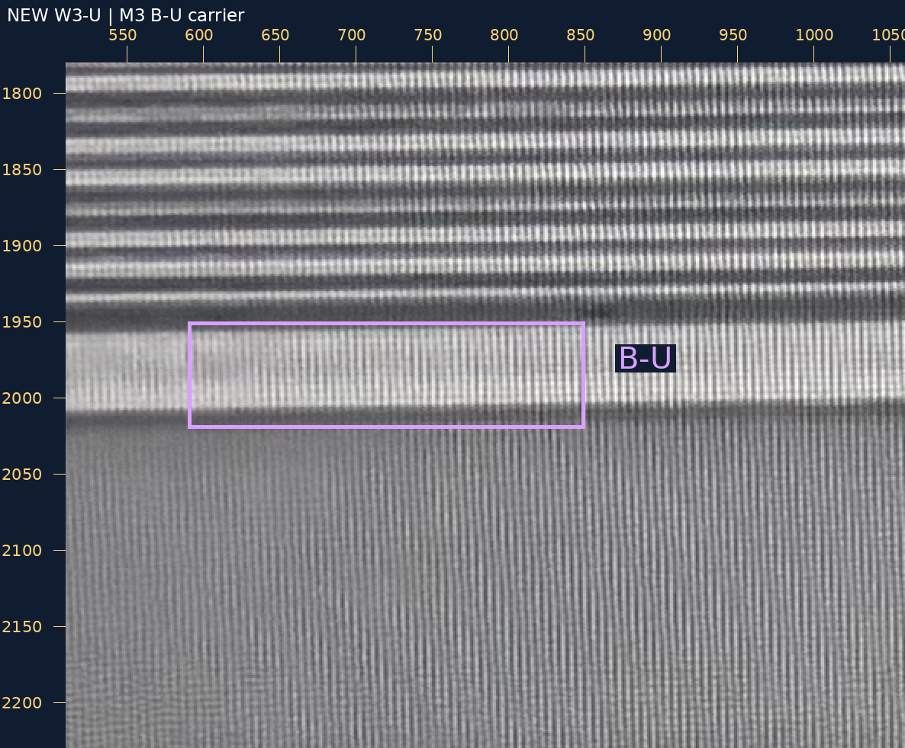
范围[510, 2510, 1060, 2960]，整数放大2倍。
无标记原图 · 标记大图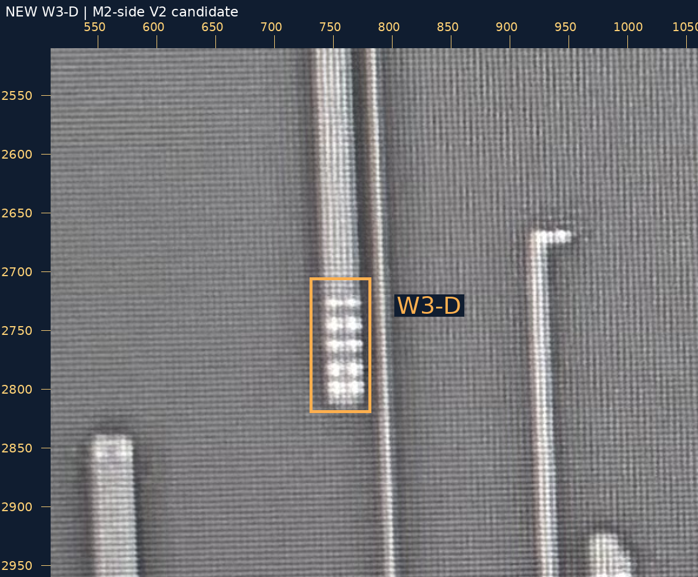
范围[510, 2550, 1060, 3000]，整数放大2倍。
无标记原图 · 标记大图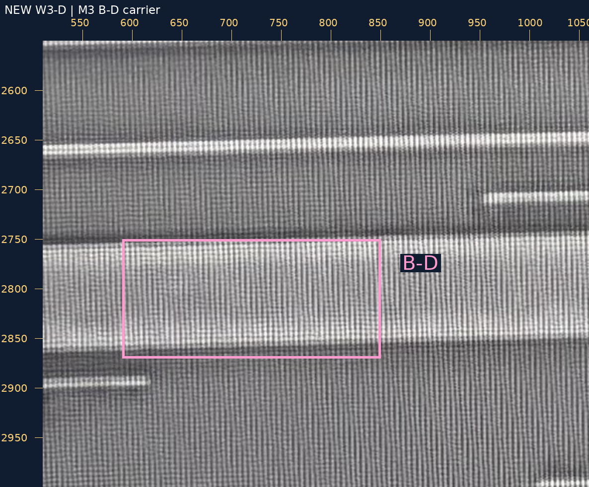
范围[140, 1730, 690, 2180]，整数放大2倍。
无标记原图 · 标记大图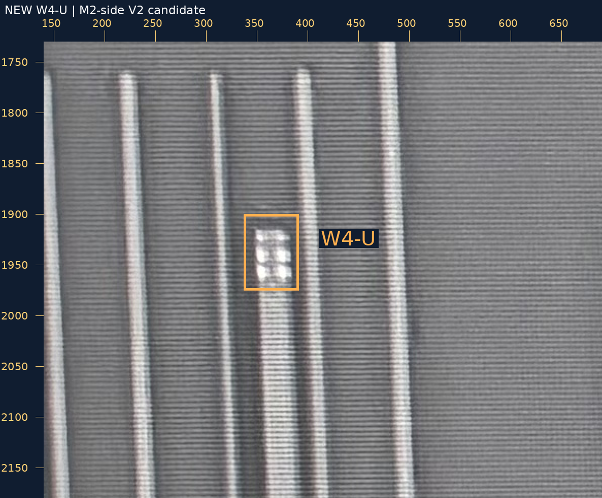
范围[140, 1780, 690, 2230]，整数放大2倍。
无标记原图 · 标记大图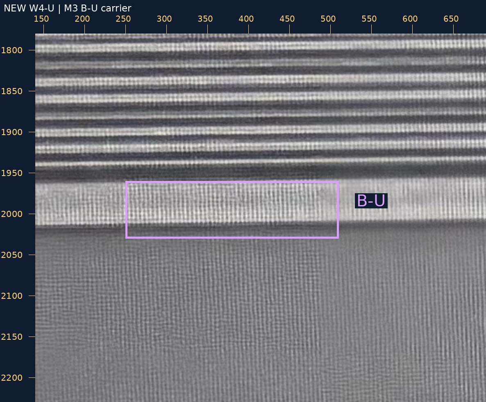
范围[140, 2510, 690, 2960]，整数放大2倍。
无标记原图 · 标记大图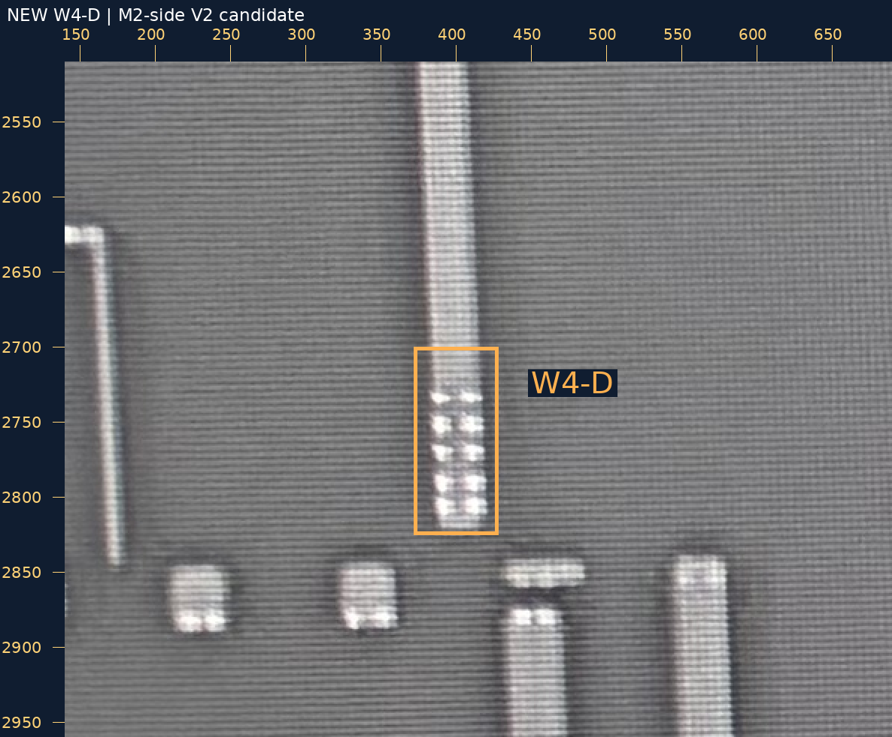
范围[140, 2550, 690, 3000]，整数放大2倍。
无标记原图 · 标记大图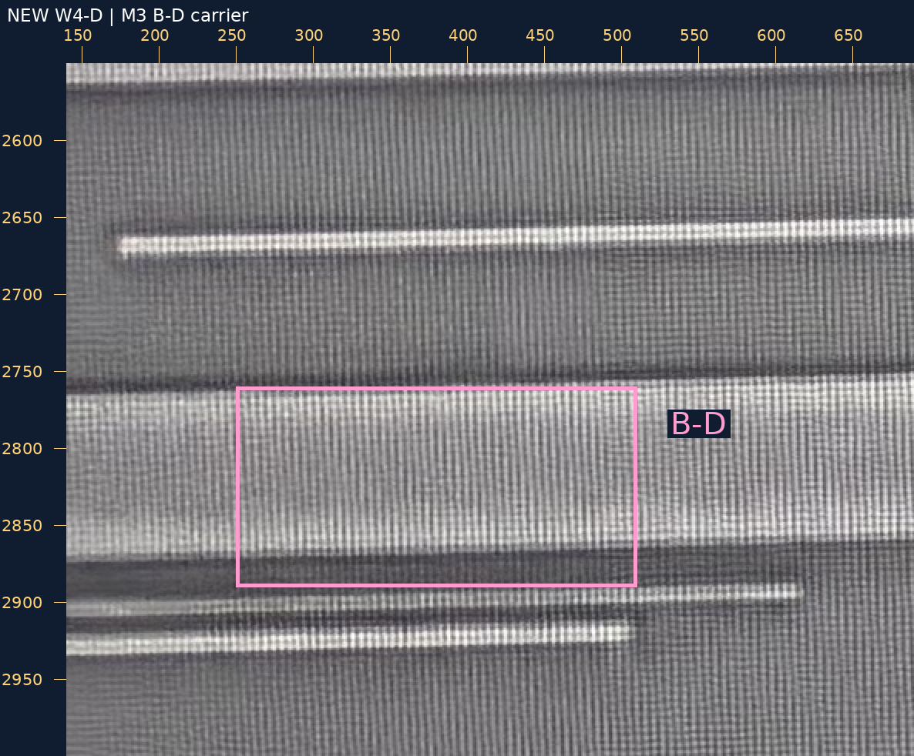
W2 V1人审 · 恢复请求 · W2限定范围核查 · 新分支来源 · 新裁决请求 · 验证
source_to_design_transform=null，geometry_adopted=false，net_edges=[]，complete_network=false。README/site/gh-pages保持。浏览器交互未实测。